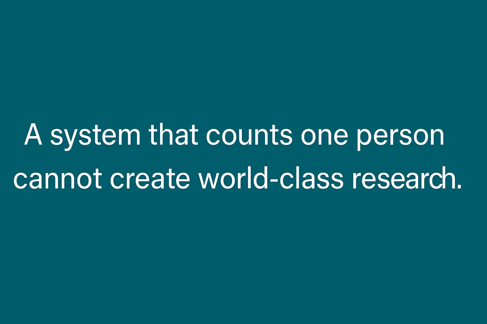

ถ้าเกณฑ์ใหม่บีบให้ทุกคนต้องทำงานเดี่ยว งานวิจัยระดับโลกจะเกิดได้อย่างไร
{kind=link}

บทความนี้เริ่มจากคำถามเรียบง่ายแต่หนักมากว่า “เรากำลังทำงานวิจัยไปเพื่ออะไร” โดยผู้เขียนหยิบข้อมูลจากงานวิจัยทั้งในภาพรวมวิทยาศาสตร์และในสาขาแพทย์–วิศวกรรม–ข้อมูล มาชี้ให้เห็นตรงกันว่า งานวิจัยสมัยใหม่ไม่สามารถทำคนเดียวได้อีกแล้ว และทีมขนาดใหญ่ให้ impact สูงกว่าอย่างมีนัยสำคัญ
ภายใต้ข้อเท็จจริงนี้ ผู้เขียนจึงตั้งคำถามต่อเกณฑ์นับผลงานแบบ “ต้อง ≥50%” ว่ามันไม่ใช่แค่ตัวเลข แต่เป็นกติกาที่ขัดกับธรรมชาติของงานวิชาการยุคใหม่ และอาจกำลังทำลายแรงจูงใจในการทำงานร่วมกันแบบที่งานคุณภาพสูงจำเป็นต้องมี
จุดเด่นของบทความนี้คือการไม่โต้แย้งด้วยความรู้สึกล้วน ๆ แต่ใช้ข้อมูลจากบทความวิชาการจริงมาแสดงว่า team size matters ในงานวิทยาศาสตร์ยุคใหม่ ไม่ใช่เพียงเพราะงานซับซ้อนขึ้น แต่เพราะความร่วมมือหลากหลายสถาบันและหลายประเทศช่วยยกระดับคุณภาพและ impact ของงานอย่างแท้จริง
เกณฑ์ ≥50% ทำลายตรรกะของงานทีมทันทีตั้งแต่ระดับโครงสร้าง
ผู้เขียนชี้ผลของเกณฑ์นี้แบบตรงไปตรงมามาก: ถ้าทำ 2 คน อาจยังพอแบ่ง 50/50 ได้ แต่เมื่อทีมมี 3 คนขึ้นไป ระบบจะเริ่มนับได้ยากหรือผลักให้ทุกคนต้องแย่ง “สัดส่วน” กันเองทันที นั่นทำให้ทีมเดียวกันค่อย ๆ กลายเป็น คู่แข่งกันเอง แทนที่จะร่วมกันสร้างงานที่ดีที่สุด
ในจุดนี้ ปัญหาไม่ได้อยู่ที่ใครขยันหรือไม่ขยัน แต่คือกติกากำลังสร้าง incentive ที่ผลักให้คนหนีงานทีม งานข้ามสาขา และงานหลายสถาบัน ทั้งที่สิ่งเหล่านี้คือธรรมชาติของงานคุณภาพสูงในโลกจริง
งานข้ามสาขา AI–แพทย์–เกษตร–วิศวกรรม จะเป็นผู้เสียหายโดยตรง
หนึ่งในประเด็นที่สำคัญที่สุดของบทความคือการชี้ให้เห็นว่างานลักษณะ data, AI, biomedical, hydrology และ engineering ต้องอาศัยหลายบทบาทพร้อมกัน เช่น คนเขียนโค้ด คนวิเคราะห์ คนเขียน discussion และ international collaborator ที่ช่วยตรวจภาษาและยกระดับงาน
ถ้าระบบนับผลงานยอมรับได้เพียงคนเดียว งานทีมที่มีคุณภาพสูงจึงถูกลงโทษโดยตรง และสิ่งที่หายไปก่อนคือ งานบูรณาการ ที่มหาวิทยาลัยเองก็พูดอยู่เสมอว่าอยากผลักดัน
ผลกระทบไม่ได้หยุดที่อาจารย์ แต่มาถึงนักศึกษา ทุนวิจัย และคนเก่งที่จะไม่กลับมา
บทความนี้ขยายผลกระทบออกไปอย่างสำคัญมาก: นิสิต ป.ตรี–โท–เอก ที่ทำงานร่วมกับอาจารย์จะต้องเจอกับความขัดแย้งเรื่อง authorship โดยไม่จำเป็น งานต่อทุนจะแพงและยุ่งยากขึ้นเพราะความร่วมมือไม่คุ้ม และในสาขาที่ต้องทำงานทีมจริง ๆ คนเก่งจะยิ่งมีแรงจูงใจออกไปเอกชนมากขึ้น
นั่นทำให้เกณฑ์นี้ไม่ได้กระทบแค่ตัวชี้วัดของบุคลากร แต่กระทบทั้ง pipeline ของนักวิจัยรุ่นใหม่ และความสามารถของมหาวิทยาลัยในการรักษาคนที่ทำงานในพื้นที่ frontier ไว้ในระบบ
คำถามสุดท้ายจึงไม่ใช่ใครผ่านเกณฑ์ แต่คือระบบนี้ยังสร้างมหาวิทยาลัยที่เข้มแข็งได้หรือไม่
ผู้เขียนทิ้งคำถามปลายทางไว้อย่างชัดเจนว่า หากระบบทำให้ทุกคนต้องทำงานเดี่ยวหรือทำงานเป็นคู่เท่านั้น งานวิจัยระดับโลกจะเกิดได้อย่างไร และสุดท้ายจะยังมีใครอยากอยู่ในระบบนี้อีกกี่คน
มุมนี้ทำให้บทความไปไกลกว่าการวิจารณ์เกณฑ์เฉพาะหน้า เพราะมันชี้ว่าระบบที่ดูเหมือนช่วยจัดการเชิงปริมาณ อาจกำลังพาเรา เดินถอยหลังเชิงคุณภาพ และส่งสัญญาณถึงลูกหลานว่ามหาวิทยาลัยไม่ใช่ที่ที่คนอยากมาสร้างอนาคตอีกต่อไป